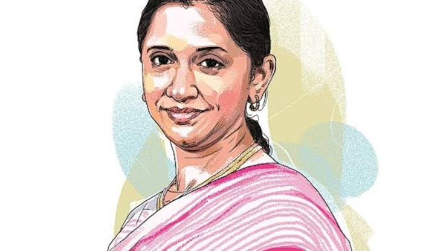

"When the going gets tough, the tough get going."
Malavika Hegde, the resilient and dynamic CEO of Cafe Coffee Day (CCD),
has become a symbol of strength and perseverance. After the tragic
passing of her husband, V.G. Siddhartha, the founder of CCD, in 2019.
Her leadership has been instrumental in stabilizing CCD's operations and
reducing its financial liabilities.
Born and raised in Bangalore, Malavika brought her rich family heritage
and profound business acumen to the forefront of her work. Under her
guidance, CCD has maintained its position as India's leading coffee
chain, with a continued focus on quality and customer satisfaction.
She is admired not only for her business acumen but also for her
compassionate leadership and dedication to employee welfare. Her story
serves as a powerful reminder that with determination. As she continues
to uphold the legacy of V.G. Siddhartha, Malavika remains a beacon of
inspiration for aspiring entrepreneurs and leaders.